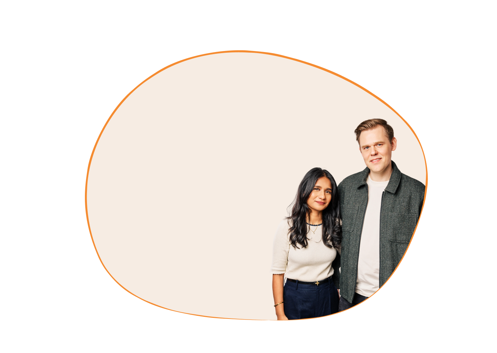
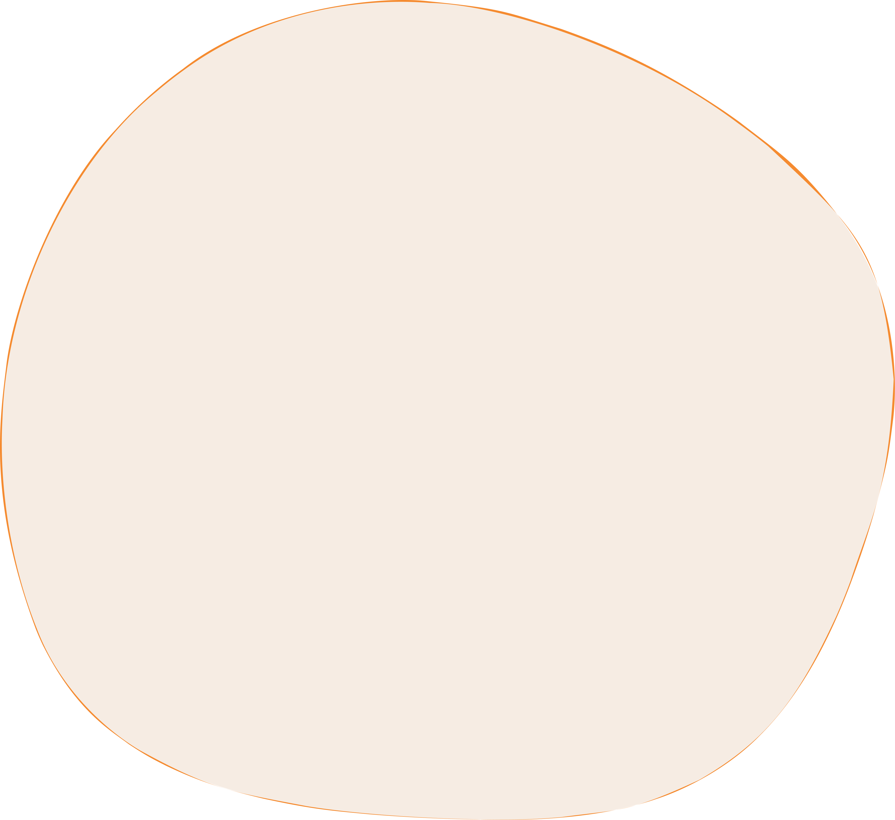
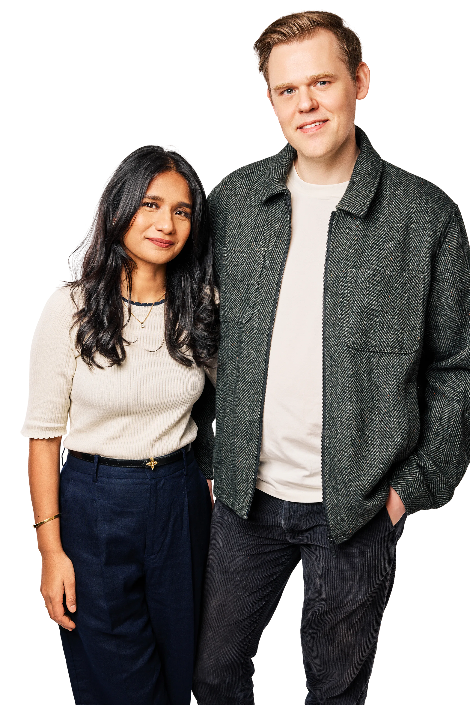

Stripey Bear,
Where Are You From?
Follow the adventures of Stripey Bear and his family as they travel the world to discover where he's from… A heartwarming, rhyming tale about heritage, home and belonging.
You'll be able to purchase the book at many of your favourite bookstores around the world, or support us directly by purchasing it here.
£6.99 + Shipping
Pre-order


Meet the Author
& Illustrator
As partners, parents, and creative collaborators, this debut picture book from Faria & Jesper is shaped by their shared experience of raising a multicultural family.
Created for their children, the story of Stripey Bear is an invitation to stay curious about culture, to feel rooted in heritage, and to celebrate every part of who you are.
Contact